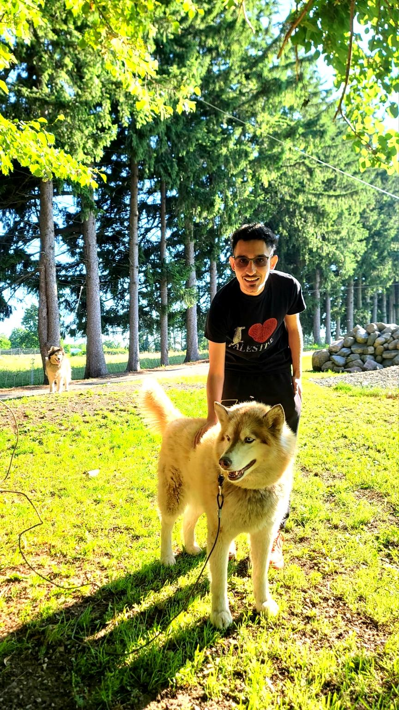

Your next favourite dev!💻
I’m a computer science student who enjoys building things that actually do something, from web apps and APIs to Discord bots and AI models. Whether it’s automating a task, solving a problem, or just messing around with code, I like projects that teach me something new and feel good to use.
Mood2Mic is a web app that recommends music based on how you're feeling. Just type in a mood, thought, or short journal-style sentence, and the app uses an emotion detection model to figure out your vibe and match it with songs that fit.
It combines natural language processing and real-time API calls to deliver personalized music suggestions, turning your thoughts into playlists, no algorithms pretending you’re happy when you’re clearly not.